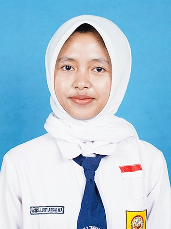
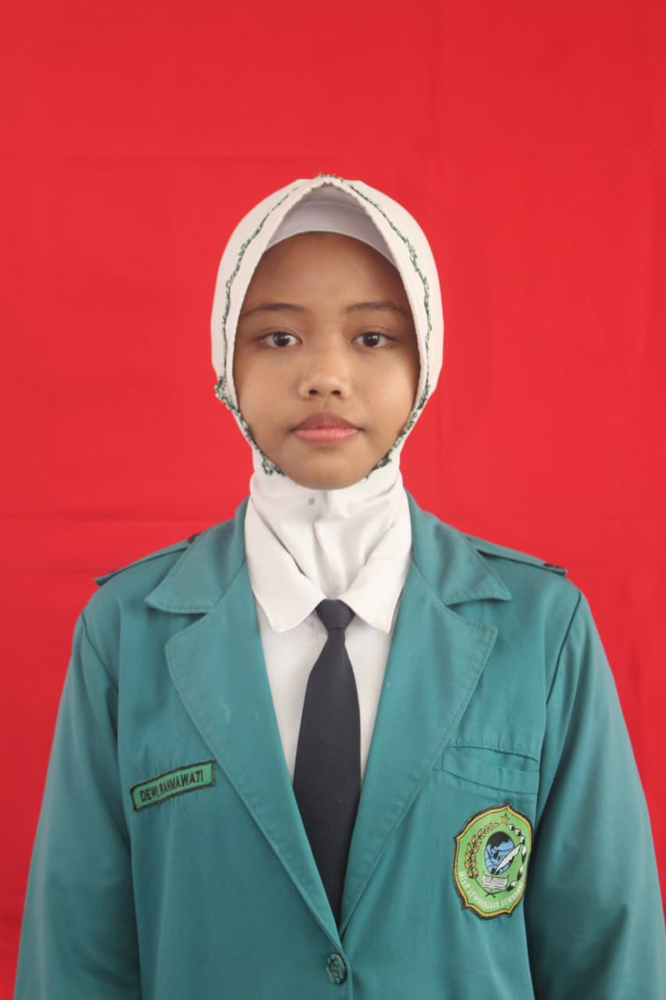
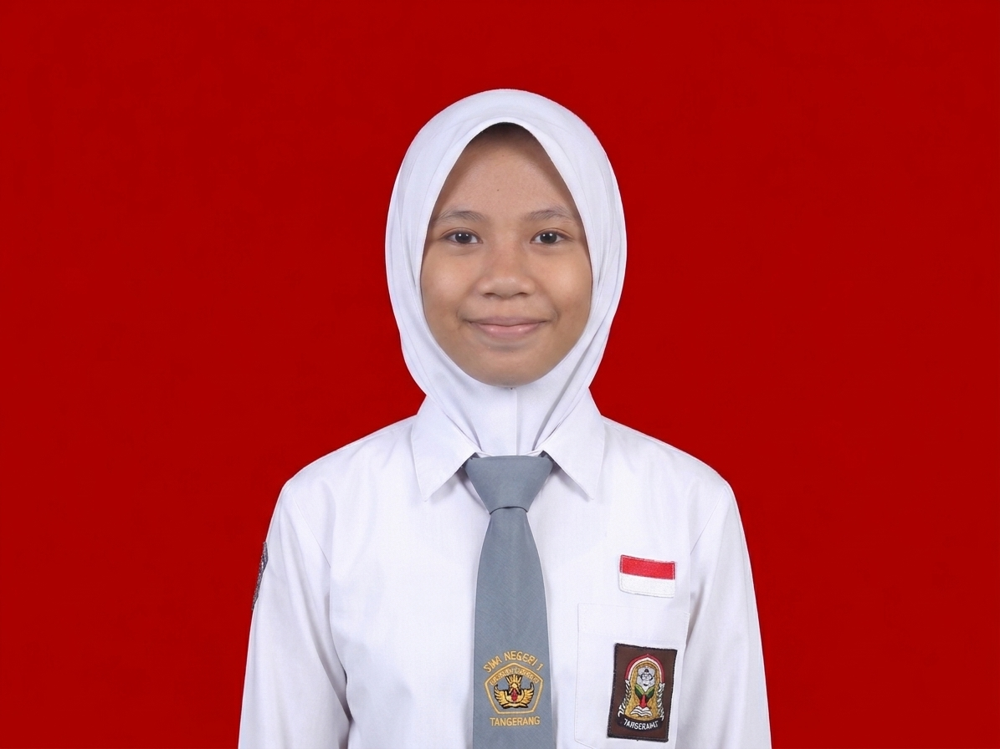

Tentang SampahKu
Mengenal pentingnya pengelolaan sampah
Mengenai Proyek Kami
Perkembangan teknologi memicu peningkatan limbah elektronik (e-waste) seperti CD, keyboard, dan harddisk yang sulit terurai. Sebagai siswa PPLG SMK Negeri 1 Tengaran, kami berinisiatif mengatasi masalah ini melalui proyek kolaborasi berbasis 3R (Reduce, Reuse, Recycle).
Kami mengubah limbah komponen komputer menjadi produk inovatif bernilai ekonomis, salah satunya dengan memanfaatkan keping CD bekas yang mengkilap menjadi lampu hias futuristik berestetika tinggi.
"Lampu hias futuristik dan merek "Lumiorb" merupakan identitas utama proyek ini. Istilah tersebut menekankan fungsi estetika dekoratif ruangan yang bernilai seni tinggi, di mana "Lumiorb" (gabungan lumi dan orb) bermakna "bola cahaya yang memancarkan keindahan". "Selain itu, slogan "Turn old trash into future light" memiliki arti "mengubah sampah lama menjadi cahaya masa depan". Slogan ini menegaskan komitmen kelompok untuk memberikan kehidupan baru bagi limbah teknologi melalui kreasi lampu hias artistik.
Prinsip 3R
Reduce
+ Klik untuk belajar
Penjelasan teoretis
Mengurangi penggunaan barang sekali pakai atau barang yang berpotensi menjadi limbah sejak awal.
Penerapan dalam proyek
Membatasi pembelian wadah atau kap lampu baru dari fabrikasi industri.
Reuse
+ Klik untuk belajar
Penjelasan teoretis
Menggunakan kembali barang bekas yang masih dapat dimanfaatkan tanpa melalui proses pengolahan yang rumit.
Penerapan dalam proyek
Memanfaatkan kembali barang bekas seperti botol, kardus, kaleng, dan barang lainnya menjadi produk yang berguna.
Recycle
+ Klik untuk belajar
Penjelasan teoretis
Mendaur ulang sampah menjadi barang baru yang memiliki nilai guna dan nilai ekonomi.
Penerapan dalam proyek
Mengolah CD bekas menjadi lampu hias, motherboard menjadi jam dinding, dan bahan bekas lainnya menjadi produk kreatif.
Materi Pembelajaran
Materi dari beberapa mata pelajaran
Produk Kami

1. Lampu Hias Futuristik Lumiorb
Ulasan Produk
Lampu hias futuristik "Lumiorb" merupakan inovasi pemanfaatan limbah keping Compact Disc (CD) dan komponen perangkat keras elektronik yang diolah kembali dengan menerapkan prinsip 3R (Reduce, Reuse, Recycle) dan metode upcycling. Dengan memanfaatkan karakteristik optik keping CD yang bertindak sebagai kisi difraksi, produk ini mampu membiaskan cahaya LED menjadi spektrum warna pelangi yang estetis. Tidak hanya berfungsi sebagai lampu dekorasi ruangan atau meja belajar yang bernuansa modern, produk ini juga memiliki nilai ekonomis tinggi serta menjadi solusi kreatif dalam mengurangi volume limbah anorganik di lingkungan masyarakat.
Alat yang Digunakan
- Gunting atau cutter tajam.
- Pistol lem tembak (glue gun).
- Penggaris dan spidol.
- Mangkuk plastik.
Bahan yang Digunakan
- Keping CD bekas sebanyak 8 keping.
- Lampu LED tumblr USB 5V, panjang 2 meter (1 set).
- Isi lem tembak (3 batang).
Langkah-Langkah Kerja Pembuatan
- Tahap persiapan: Membersihkan 8 keping CD bekas dari debu dan kotoran, kemudian mengeringkannya.
- Tahap pemotongan CD: Membuat pola geometris pada CD dan menyiapkan potongan mozaik berbentuk persegi serta segitiga.
- Tahap penyusunan cangkang: Menyusun potongan CD mengelilingi cetakan hingga membentuk cangkang geometris dengan celah untuk pencahayaan.
- Tahap perakitan lampu dan dudukan: Menyiapkan alas dari kardus bekas, memasukkan lampu LED ke dalam cangkang, kemudian menyatukannya dengan dudukan.
- Tahap pengujian: Memeriksa fungsi lampu menggunakan sumber daya USB yang sesuai.
Estimasi Biaya dan Analisis Keuntungan
Rincian Biaya Alat
Total biaya alat: tidak ada.
Rincian Biaya Bahan
- CD bekas 12 keping: Rp30.000.
- Lampu LED tumblr USB 5V: Rp10.000.
- Isi lem tembak 2 batang: Rp4.000.
Total biaya bahan: Rp44.000.
C. Penentuan Harga Jual
Harga jual yang ditetapkan: Rp60.000/unit.
D. Perhitungan Laba Usaha
Laba = Harga jual - Biaya bahan.
Berdasarkan harga jual Rp60.000: Rp60.000 - Rp46.000 = Rp16.000/unit.

Gantungan Kunci dari Keycap Keyboard Bekas
Ulasan Produk
Gantungan kunci dari keycap keyboard bekas merupakan hasil kreasi daur ulang kreatif yang mengubah tombol-tombol papan ketik komputer mekanik yang sudah tidak terpakai menjadi sebuah aksesori personal yang unik. Melalui teknik pembersihan, pengeboran presisi, dan pelapisan akhir (finishing) cat pelindung, komponen plastik sisa perangkat keras ini disulap menjadi produk cendera mata bertema teknologi modern. Selain memiliki daya tarik visual yang khas bagi kalangan muda, produk ini membuktikan bahwa limbah elektronik kecil pun dapat diubah menjadi barang bernilai jual tinggi.
Materi
- Teknik bongkar-pasang hardware: memahami struktur penguncian tombol (keycap) pada keyboard mekanik maupun membran.
- Prinsip reuse dan upcycling: memanfaatkan keycap plastik yang masih utuh menjadi aksesori gantungan kunci unik bertema teknologi.
- Pengeboran plastik dan finishing: memahami proses pembuatan lubang serta pelapisan permukaan plastik agar lebih rapi.
Alat yang Digunakan
- Obeng pipih kecil.
- Bor mini atau solder panas.
- Amplas halus.
Bahan yang Digunakan
- Keycap bekas.
- Ring gantungan kunci dan rantai (10 pcs).
- Lem tembak.
- Cat semprot bening (clear).
Langkah-Langkah Kerja
- Melepaskan keycap dari keyboard bekas.
- Membersihkan keycap.
- Menyiapkan lubang untuk pemasangan ring gantungan kunci.
- Menghaluskan bagian tepi lubang agar hasilnya lebih rapi.
- Memasang ring gantungan kunci menggunakan tang.
- Melakukan finishing menggunakan cat bening agar permukaan terlihat mengkilap.
Estimasi Biaya (10 Pcs)
A. Biaya Alat
Rp0.
B. Biaya Bahan
Total biaya bahan untuk 10 pcs: Rp30.000.
Modal per pcs: Rp3.000.
C. Harga Jual
Rp10.000/pcs.
D. Laba Usaha
Rp10.000 - Rp3.000 = Rp7.000/pcs.
Total laba 10 pcs: Rp70.000.

Jam Dinding Estetik dari Platter Harddisk Bekas
Ulasan Produk
Jam dinding estetik dari platter harddisk bekas adalah wujud pemanfaatan piringan magnetik internal dari komponen penyimpanan data komputer yang memiliki tingkat reflektivitas tinggi menyerupai cermin metalik. Dengan memadukan struktur logam bawaan yang kokoh dan mesin jam dinding analog modern, limbah perangkat keras ini bertransformasi menjadi penunjuk waktu fungsional yang bernilai seni tinggi. Produk ini menghadirkan kesan estetik bergaya industrial sekaligus memperpanjang siklus hidup material logam bernilai guna di lingkungan perkantoran maupun rumah tangga.
Materi
- Pengenalan komponen HDD: memahami struktur piringan magnetik (platter) pada harddisk drive yang memiliki reflektivitas tinggi.
- Elektronika dasar mesin jam: mempelajari mekanisme penggerak mesin jam dinding analog berbasis daya baterai DC 1,5 V.
- Keseimbangan dan simetrisasi: memahami penentuan titik pusat lingkaran untuk penempatan jarum jam dan angka.
Alat yang Digunakan
- Obeng bintang Torx T6.
- Tang.
- Pistol lem tembak.
Bahan yang Digunakan
- Platter HDD bekas (1 pcs).
- Mesin jam dinding analog pendek.
- Baterai AA (1 pcs).
- Stiker penanda angka.
- Lem tembak.
Langkah-Langkah Kerja
- Menyiapkan platter HDD bekas yang sudah dilepaskan dari perangkat oleh teknisi.
- Membersihkan permukaan platter menggunakan kain mikrofiber halus.
- Memasang poros mesin jam pada lubang tengah platter.
- Menempelkan stiker angka penanda waktu (12, 3, 6, dan 9) secara simetris.
- Memasang jarum jam, menit, dan detik sesuai urutannya.
- Memasang baterai AA dan menguji fungsi jam.
- Memasang gantungan pada bagian belakang mesin jam.
Estimasi Biaya (1 Unit Jam)
Biaya Alat
Rp15.000 (pembelian obeng bintang T6).
Biaya Bahan
Rp24.000/unit.
Harga Jual
Rp65.000/unit.
Laba Usaha
Rp65.000 - Rp24.000 = Rp41.000/unit.
 bekas.jpg "logo utama")
Tempat Pensil Organizer dari Disket Bekas
Ulasan Produk
Tempat pensil organizer dari disket (floppy disk) bekas merupakan bentuk penerapan prinsip reuse dan perakitan bangun ruang sederhana yang memanfaatkan media penyimpanan data digital masa lampau. Dengan menyatukan beberapa keping disket berukuran 3,5 inci menggunakan struktur kubus terbuka yang diperkuat perekat termoplastik, limbah retro ini berubah menjadi wadah alat tulis meja yang kokoh dan fungsional. Produk ini tidak hanya menawarkan solusi penyimpanan yang rapi, tetapi juga menghadirkan sentuhan estetika bergaya vintage-tech yang unik.
Materi
- Teknik merakit bangun ruang kubus: menggabungkan 5 bidang datar berbentuk persegi menjadi struktur tiga dimensi.
- Struktur kekuatan sambungan: memahami penguatan sudut bidang menggunakan perekat termoplastik.
- Pemanfaatan retro hardware: mengubah floppy disk bekas menjadi perlengkapan meja belajar bernilai seni retro.
Alat yang Digunakan
- Pistol lem tembak.
- Cutter.
Bahan yang Digunakan
- Disket bekas (5 keping).
- Batang lem tembak (1 pcs).
Langkah-Langkah Kerja
- Menyiapkan 5 keping disket bekas berukuran sama dan membersihkannya dari debu.
- Memposisikan 1 disket secara mendatar sebagai alas tempat pensil.
- Menyatukan 4 disket lainnya secara tegak mengelilingi alas hingga membentuk wadah kotak tanpa tutup.
- Memperkuat bagian sudut-sudut dalam agar struktur lebih kokoh.
- Merapikan sisa perekat. Tempat pensil siap digunakan.
Estimasi Biaya (1 Unit)
Biaya Alat
Rp0.
Biaya Bahan
Rp2.000/unit.
Harga Jual
Rp18.000/unit.
Laba Usaha
Rp18.000 - Rp2.000 = Rp16.000/unit.

Tempat Kompos Tanaman dari Casing PC Bekas
Ulasan Produk
Komposter tanaman organik dari casing PC bekas adalah inovasi ramah lingkungan yang mengonversi cangkang logam pelindung komputer menjadi wadah pengolahan sampah organik dan media tanam produktif. Dengan menambahkan sistem sirkulasi udara (aerasi), lubang drainase air, serta lapisan cat anti-karat, rangka besi CPU yang tadinya terbengkalai kini beralih fungsi menjadi sarana edukasi pertanian perkotaan (urban farming). Inovasi ini memberikan solusi nyata dalam mengelola sampah rumah tangga sekaligus mendukung gerakan pelestarian lingkungan hidup.
Materi
- Pengelolaan limbah organik: memanfaatkan wadah komposter untuk mengubah limbah daun dan sampah dapur menjadi pupuk kompos alami.
- Teknik pengecatan logam anti-karat: memahami fungsi lapisan pelindung logam dari kelembapan dan korosi.
- Prinsip aerobik kompos: memahami pentingnya lubang sirkulasi udara (aerasi) dan drainase air pada komposter.
Alat yang Digunakan
- Mesin bor dan gerinda.
- Obeng set.
- Kuas.
- Sarung tangan.
Bahan yang Digunakan
- Casing CPU bekas utuh.
- Cat anti-karat atau pilox (1 kaleng).
- Engsel pintu kecil (1 set).
Langkah-Langkah Kerja
- Menyiapkan casing PC bekas yang sudah dikosongkan dari komponen elektronik oleh teknisi.
- Membersihkan cangkang casing dan memastikan bagian tepinya aman serta tidak tajam.
- Menyiapkan sistem drainase dan aerasi pada wadah.
- Melapisi permukaan casing menggunakan cat anti-karat dan mengeringkannya di tempat yang memiliki ventilasi baik.
- Memasang engsel pada bagian penutup agar dapat dibuka dan ditutup.
- Menggunakan wadah untuk menampung sampah organik dan media kompos.
Estimasi Biaya (1 Unit Komposter)
Biaya Alat
Rp5.000.
Biaya Bahan
Rp40.000/unit.
Harga Jual
Rp100.000/unit.
Laba Usaha
Rp100.000 - Rp40.000 = Rp60.000/unit.

Hiasan Dinding Mozaik dari Keycap Keyboard Bekas
Ulasan Produk
Hiasan dinding mozaik dari keycap keyboard bekas merupakan karya seni dekoratif yang menerapkan teknik penyusunan piksel (pixel art) menggunakan aneka ragam warna tombol papan ketik komputer. Melalui perencanaan pola tata letak yang cermat di atas media papan, tombol-tombol sisa perangkat keras komputer dirangkai secara teliti membentuk visual logo atau tulisan yang artistik. Produk ini tidak hanya menampilkan keindahan seni mozaik kontemporer, tetapi juga menjadi sarana kampanye pelestarian lingkungan melalui medium seni rupa berbasis daur ulang limbah teknologi.
Materi
- Seni mozaik dan kolase: teknik menyusun potongan-potongan kecil elemen warna menjadi satu kesatuan gambar atau pola dekoratif.
- Desain grafis piksel (pixel art): mengadopsi prinsip tampilan resolusi piksel komputer pada penyusunan tombol keycap.
- Manajemen tata letak (layouting): merencanakan pola huruf atau logo pada bidang triplek sebelum proses perekatan.
Alat yang Digunakan
- Pistol lem tembak.
- Gunting.
- Penggaris.
Bahan yang Digunakan
- Tombol keycap bekas beraneka warna.
- Papan triplek tebal.
- Lem kayu atau isi lem tembak.
- Bingkai kayu bekas.
Langkah-Langkah Kerja
- Menyiapkan papan triplek dan membersihkan permukaannya.
- Membuat sketsa pola tulisan, seperti "RPL", "PPLG", atau gambar logo.
- Mengelompokkan keycap bekas berdasarkan warna penutupnya.
- Menyusun keycap di atas papan triplek sesuai pola yang telah dirancang.
- Merekatkan keycap satu per satu hingga seluruh pola tertutup.
- Memasang bingkai kayu pada tepi papan serta menambahkan tali atau gantungan pada bagian belakang.
Estimasi Biaya (1 Unit Hiasan Mozaik)
Biaya Alat
Rp0.
Biaya Bahan
Rp15.000/unit.
Harga Jual
Rp45.000/unit.
Laba Usaha
Rp45.000 - Rp15.000 = Rp30.000/unit.
Anggota Kelompok

Adinda Lutfi Assalwa
Tim SampahKu

Dewi Rahmawati
Tim SampahKu

Evena Umahatul Latifah
Tim SampahKu
Kontak Kami
Punya pertanyaan, saran, atau ingin mengetahui lebih lanjut tentang proyek SampahKu? Hubungi kami melalui kontak berikut!